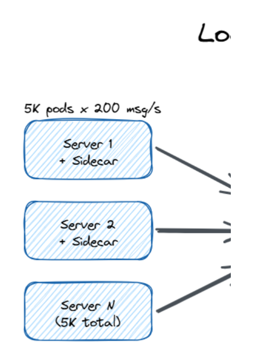

A growing SaaS company runs ~5,000 backend service instances. Each emits ~200 log lines per second. Design a system that ingests them all, preserves order, and lets engineers tail / search / audit them.
{ts, level, service, traceId, msg, ...}.5,000 instances × 200 messages/sec = 1,000,000 messages/sec (1 M/sec) Message size ≈ 500 B (uncompressed JSON, 1 char = 1 B in ASCII) Ingestion bandwidth (raw) = 10⁶ × 500 B = 5 × 10⁸ B/s = 500 MB/s With ~5× compression on wire = 500 MB/s / 5 = 100 MB/s on wire Per day (uncompressed at rest): 500 MB/s × 86,400 s = 4.3 × 10¹³ B ≈ 43 TB/day After columnar compression in cold tier (≈ 8×) ≈ 5–6 TB/day on S3 Peak factor (incident spikes, ~3–5× base) → size to ~3M msg/sec headroom
2026-05-25 10:14:03 INFO svc=auth user=42 traceId=abc action=login latency_ms=87. Engineers read these later to figure out what went wrong (debugging) or to answer "what did the system do?" for an audit.b = bit (lowercase), B = byte (uppercase); 1 B = 8 b. 1 KB = 10³ B, 1 MB = 10⁶ B, 1 GB = 10⁹ B, 1 TB = 10¹² B (decimal/SI). Storage and ingest are always in bytes. Network NIC speeds (1 Gbps, 10 Gbps) are in bits — divide by 8 before comparing.Before designing anything, pin down what "in order" means. The cost differs by 1000×.
| Ordering scope | What it means | Cost | Realistic? |
|---|---|---|---|
| Global total order | Every message worldwide gets a single rank: 1st, 2nd, 3rd... | Astronomical — every server would have to agree on every message before storing it | ❌ No |
| Per-server FIFO | Messages from server S are read in the order S sent them. Server A and Server B aren't compared. | Cheap — just partition by server-id | ✅ Strong default |
| Causal / per-trace order | If event A caused event B (across servers), A is shown before B | Medium — needs logical clocks | ✅ When tracing requests |
| Approximate time order | Within a few seconds of each other | Easy — sort by timestamp with a tolerance | ✅ Common compromise |
┌──────────────────────────┐
5,000 pods ────────►│ Edge Ingest Tier │
(each 200 msg/sec) │ ~50 stateless pods │
│ authenticate + route │
└────────────┬─────────────┘
│ routes by hash(serverId)
▼
┌──────────────────────────┐
│ Kafka cluster │
│ ~20 brokers │
│ ~500 partitions │
│ partition = hash(srv) │
└────────────┬─────────────┘
│ consumers read in order
┌───────────────────────┼───────────────────────┐
▼ ▼ ▼
┌───────────────┐ ┌───────────────┐ ┌───────────────┐
│ Hot store │ │ Search index │ │ Cold archive │
│ NVMe, 24-48 h │ │ Elastic / │ │ S3 Parquet │
│ live tail │ │ ClickHouse │ │ years │
└───────────────┘ └───────────────┘ └───────────────┘

⬇ Download Interactive Diagram (.excalidraw) ↗ Open in Excalidraw
Every service instance runs a small sidecar called an agent (Fluent Bit, Vector, or in-house). Its job:
serviceId, podId, a local sequence number that goes up by 1 every msg, wall clock, and an HLC (Hybrid Logical Clock).Per-instance outbound bandwidth: 200 msg × 500 B / 5 (compression) = 20 KB/sec. Trivial.
Each ingest pod can sustain ~25,000 msg/sec → we need ~50 ingest pods (with 50–70% headroom for incident spikes). They:
hash(serviceId + podId) % numPartitions — same source always lands on same partition → preserves order.hash("auth-svc:pod-42") = 8137264291. Used here to evenly spread sources across partitions deterministically.This is the heart of the design. Sizing math:
serviceId + podId — all messages from one pod land on the same partition, preserving per-pod FIFO.These four concepts connect tightly. Here's how they fit together:
KAFKA CLUSTER (20 brokers)
├── Broker 1 (one physical server)
│ ├── Partition 0 [LEADER] ← appends messages, serves reads
│ ├── Partition 3 [REPLICA] ← passive copy, takes over if leader dies
│ └── Partition 5 [REPLICA]
├── Broker 2
│ ├── Partition 1 [LEADER]
│ ├── Partition 0 [REPLICA] ← same partition, different broker (RF=3)
│ └── Partition 4 [LEADER]
├── Broker 3
│ ├── Partition 2 [LEADER]
│ ├── Partition 0 [REPLICA] ← 3rd copy of Partition 0
│ └── ...
└── ... (20 brokers total, 500 partitions spread across them)
WRITES:
Ingest pod → hash("srv-42") → Partition 42 LEADER (on Broker 7)
│ RF=3: replicate to
├─► Broker 12 (replica)
└─► Broker 3 (replica)
READS:
Consumer (hot-store writer) ←── reads Partition 42 in order from Leader
| Tier | Holds | Hardware | Used for |
|---|---|---|---|
| Hot | Last 24–72 hours | NVMe SSD, replicated, ~50 TB total | Live tail, debugging, alerts |
| Warm | 7–30 days, indexed | ClickHouse / OpenSearch cluster (~20 nodes) | Text search, dashboards |
| Cold | 1–7 years | S3 + Parquet (~2 PB after compression over 1 yr) | Compliance, batch analytics |
| Query type | Goes to | Why |
|---|---|---|
| Logs from srv-42, last 5 min | Hot store (NVMe) | Key lookup by serverId + time range — sequential read, NVMe perfect |
| All logs containing "OutOfMemory" | Search index (ClickHouse) | Needs inverted index across all servers — raw disk can't do this |
| Last year's audit trail | Cold (S3 Parquet) | Cheap bulk columnar scan, no latency requirement |
Each message carries:
{
"serverId": "srv-42",
"localSeq": 18394201, // server's own counter; goes up by 1 each msg
"wallClock": 1716636843123, // server's local time in milliseconds
"hlc": [1716636843123, 7], // Hybrid Logical Clock
"payload": "user=42 action=login ..."
}Because we partitioned by serverId, all messages from srv-42 are stored in one Kafka partition in the order they arrived. Kafka guarantees a consumer reads them in the same order.
The consumer remembers lastSeenSeq[serverId]. If the next message has localSeq ≠ lastSeen + 1, we know we missed something → alert.
Different servers have slightly different clocks (a few milliseconds off). If two events happen on different servers, whose timestamp do we trust? An HLC is a pair of numbers that combines wall-clock time with a logical counter, so causality is preserved even when clocks drift.
(physicalTime, logicalCounter). The physical part is just the wall clock. The logical counter ticks up whenever two events happen in the same millisecond OR when a message arrives from a "future" server. Result: if event A really did happen before event B (because A's message was used to make B), then HLC(A) < HLC(B). Always.When server emits an event:
hlc.physical = max(local clock, last hlc.physical)
hlc.logical = (hlc.physical advanced?) ? 0 : hlc.logical + 1
When a server receives a message:
hlc.physical = max(local clock, last hlc.physical, incoming hlc.physical)
hlc.logical = (something else, but you get the idea)
At read time, the reader pulls from N partitions and merges by HLC, with a small bounded delay (e.g., 5 seconds) to absorb skew. K-way merge is O(log N) per message — very fast.
| Failure | What happens | Mitigation |
|---|---|---|
| Agent on a server crashes | Messages in memory are lost | Agent writes to local ring buffer FIRST — replays from there on restart |
| Edge ingest node dies | Servers can't deliver | Sticky routing fails over to peer; agents retry with backoff |
| Kafka broker dies | One copy of partition lost | RF=3 means 2 copies remain; ISR (in-sync replica) elects a new leader in <1s |
| Whole Availability Zone (AZ) down | ~⅓ of cluster gone | Cross-AZ replication, min.insync.replicas=2 |
| A consumer falls behind | Storage tier missing recent data | Buffer grows in Kafka; auto-alert when disk hits 80% |
| Clock skew on a server | Wrong timestamps | HLC tolerates it; cap forward drift to ±5s |
"Show me logs from srv-42 right now." → Consumer reads that one partition end-to-end, latency p99 < 1 second.
Background pipeline writes from Kafka → Elasticsearch/ClickHouse. Queries run there.
Pull months-old data from S3 Parquet files, partitioned by (serverId-prefix, hour).
Given a traceId (an ID stamped on every log message in one user request), fan out queries to every partition that touched that trace, then K-way merge by HLC.
abc-123-xyz) attached to every log message produced while handling a single user request. Even if 50 servers touched the request, you can grep all their logs by the trace ID to reconstruct the full story.Redis is NOT the primary store. 1M msg/sec global counter is impossible on a single Redis (single-thread bottleneck → max ~150k INCR/sec on one instance). But Redis has narrow roles:
| Role | Pattern | How to scale |
|---|---|---|
| Per-server sequence counter (if agents are stateless) | INCR seq:{serverId} | Better: keep counter inside the agent. No Redis needed. |
| Rate-limiting noisy sources | INCR rl:{serverId} + TTL | Shard by hash(serverId) across many Redis instances |
| Live dashboard counters | Sharded counter pattern | Many small counters → aggregate on read |
| Layer | Instances | Per-instance load | Total |
|---|---|---|---|
| Sidecar agents | 5,000 (one per pod) | 200 msg/s, 20 KB/s compressed out | 1M msg/s |
| Edge ingest | ~50 pods | 25k msg/s | 1M msg/s |
| Kafka brokers | ~20 (3 AZs) | 100 MB/s in (RF=3 → 300 MB/s I/O) | 1.5 GB/s aggregate I/O |
| Hot store (NVMe) | ~10 nodes × 8 TB | Random read | ~50 TB rolling 72h |
| Search index (ClickHouse) | ~20 nodes | ~50k docs/s indexing | filtered subset of stream |
| S3 cold (Parquet) | object storage (managed) | — | TB–PB scale, years |
serverId — gives free per-server FIFO via Kafka.hash(serviceId+podId) to a Kafka cluster with ~500 partitions on ~20 brokers (RF=3, min.ISR=2) — Kafka gives per-partition order natively.Every technical word from this doc, in plain English.
A small background program running on each server. Collects local log messages and ships them to the central system.
An operation that either fully completes or doesn't happen at all — no half-states. INCR in Redis is atomic.
One datacenter inside a cloud region. AZs share a region but have independent power/network so an outage in one doesn't kill another.
A "slow down, I'm full" signal sent upstream. Prevents fast producers from crushing slow consumers.
Group many small messages together before sending — saves network round-trips. Like carpooling.
One machine in a Kafka cluster. Holds a slice of the partitions.
Two computers' clocks disagreeing by a few milliseconds. Inevitable in distributed systems.
Shrinking data so it takes less space/bandwidth. Snappy and Zstd are popular fast compressors.
Code that reads messages from Kafka (the opposite of a producer, which writes).
The "front door" of the system. A pool of small machines that accept incoming messages and forward them on.
An open-source search engine for text data. Used for log search.
"First In, First Out" — items come out in the order they went in. Like a queue.
A function that turns any input into a fixed-size number. Used to spread data across partitions deterministically.
A pair (wallTime, counter) that preserves cause-and-effect order across servers even when clocks drift.
Storage layers ranked by speed and cost. Hot = fastest + most expensive (recent data). Cold = slowest + cheapest (old archives).
To accept incoming data into a system.
A Kafka broker that has all the latest data and can take over if the leader dies.
An open-source append-only logbook built for huge volume. Partitioned for parallelism. Used by most large companies.
Merging K sorted lists into one sorted list using a min-heap. O(log K) per pick.
The automatic process of choosing which broker "owns" a partition when the previous owner dies.
A short text record a server writes when something happens (login, error, click, etc.).
The fastest type of disk in 2026 — roughly 10× quicker than a normal SSD.
The 99th percentile response time. p99 < 1s means 99% of requests are faster than 1 second.
A compressed columnar file format — like a super-efficient CSV. Great for analytics.
One slice/bucket of a larger logical stream. Splits work across machines so no single node is overloaded.
Sending many commands without waiting for replies in between. Amortizes network cost.
An in-memory key-value store. Very fast (~100k–1M ops/sec). Used for caching, rate limiting, counters.
How many copies of each message Kafka keeps. RF=3 means 3 copies on 3 different brokers.
A fixed-size circular buffer. New entries overwrite the oldest. Used as a small disk safety-net.
Amazon's object storage service. Practically infinite, cheap, very durable. Used for long-term archive.
One logical counter split into N physical counters to break the hot-key bottleneck.
Splitting data/work across multiple machines so no one is overloaded.
Always sending the same input to the same destination (e.g., same server-id always to same ingest node) to preserve order.
How many operations per second the system handles.
A unique ID attached to every log line during one user request. Lets you reconstruct what happened across many servers.
How long a key lives before being auto-deleted. Useful for ephemeral counters and caches.
The actual real-world time on a computer (vs. a logical counter). Subject to drift and NTP corrections.